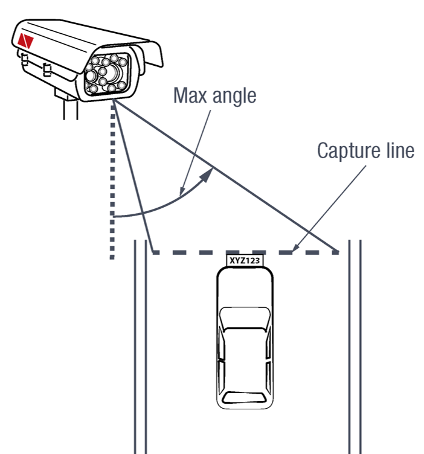
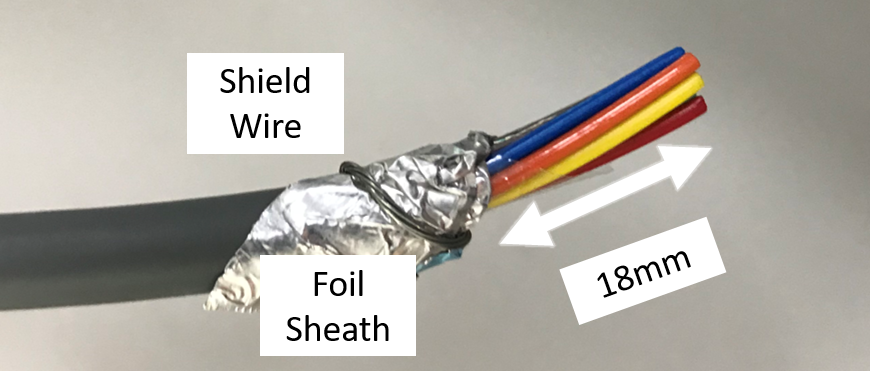
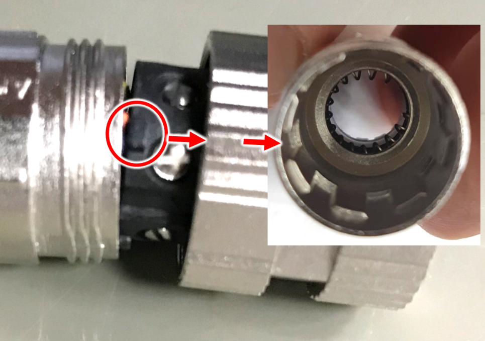
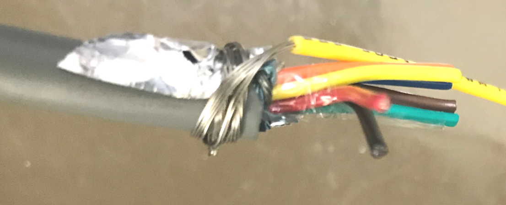
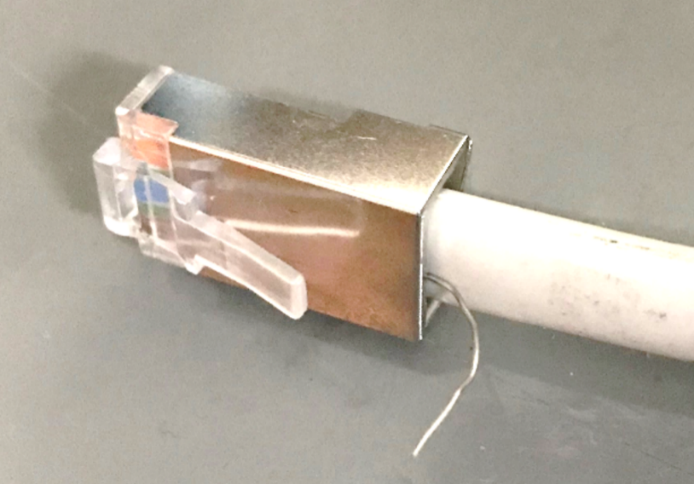
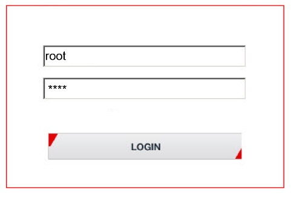

1. About this Document
1.1. Who Should Read this Document
This document is for:
-
Technical personnel who need to install IZA Camera Systems.
[Note]
This document does not take the place of training by INEX Technologies' certified specialists. Contact INEX Technologies to schedule training.
2. Quick Installation Overview
-
Unpack the Camera System - see [s_Package-Contents] .
-
Gather any additional items needed - see [s_ReqOptnlAccessories] .
-
Plan your physical installation - see [ps_Plan-Installation] .
-
Install the hardware (including cable construction) - see [s_Hardware-Installation] .
-
Reserve IP addresses for the components in your ALPR system - RoadView computer(s) and camera(s) - see [s_Reserve-IP-Addrs]
-
Use IZ Discovery to find the initial IP Addresses of the cameras connected to your network - see [s_Recognize-IZ-Discovery] .
-
Log into each camera, and change its IP address according to the requirements of your network. Use fixed addresses. Record these new addresses for use in RoadView configuration - see [ps_Logging-In-to-Camera ] and [ps_Changing-Camera-IP] .
-
Calibrate the cameras - see [s_Calibrating-Cameras] .
-
Use IZ Discovery to find the IP address of the RoadView computer. Change the computer’s IP address according to the requirements of your network. See [s_Determining-IP-of-RoadView] and the \{Zvulun: need link here - get from related documents table} RoadView ALPR User Guide.
-
Log in to RoadView, and configure RoadView, including adding the connected cameras - see [ps_Using-RoadView] and the \{Zvulun: need link here get from related documents table } RoadView ALPR User Guide.
-
On the Journal tab, verify that Events are being generated for each vehicle passing each camera, and that the recognition has sufficient accuracy and confidence. See [ps_Using-RoadView] and the \{Zvulun: need link here get from related documents table } RoadView ALPR User Guide.
3. Camera System Overview
[#s_Package-Contents]
3.1. Package Contents
Carefully unpack the contents of the ALPR Camera System package.

The package includes:
-
{shortprodname}, ALPR All-in-one AI Camera System
-
LAN cable connector (field-mountable)
-
Power/Signals cable connector (field-mountable)
-
Mounting adapter plate with screws: 3 - 18-8 stainless steel thread-locking socket head screws, 1/4"-20 thread size, 5/8" long; Allen heads; used to attach the mounting adapter plate to the housing
[Note]
If any parts are missing or damaged, please contact INEX Technologies.
3.2. Camera System Details and Dimensions
The {shortprodname} ALPR All-in-one AI Camera System is suitable for tolling and ITS applications, with different models available for different distances and illumination requirements. \{Zvulun: partial} It has a rugged, all-weather, IP67-compliant, waterproof housing and a protective sunshade. The system consists of a black and white License Plate Recognition (LPR) camera, a color Overview (OV) camera, and an integrated, LED-based illumination system. A computer running license plate recognition software is also built in.


\{Zvulun: front and side view of dimensions are partials}
3.3. Multi-flash Technology
\{Zvulun: possible partial, along with the picture} The Camera System’s illuminators project different light intensities in a sequence (also called multi-flash technology). This produces a series of video frames with varying degrees of illumination, which helps to determine the best possible recognition.

[#s_Built-in-White-LEDs-IZA800GW]
4. Required/Optional Accessories (Not Included)
[#s_Required-Accessories]
4.1. Required Accessories
\{Zvulun: some of these are possible partials}
-
An Allen wrench used to attach the mounting adapter plate to the housing (if applicable); size 3/16" (4.76 mm)
-
8-wire cable for power/signals; recommended to use E119932-1/LL84201, 24 gauge (size of each wire); see [ps_Construct-Pwr-Signals-Cable] .
-
2 mm flat screwdriver for tightening the screw terminals of the power/signals connector (see [ps_Construct-Pwr-Signals-Cable]).
-
16 mm torque wrench for tightening the nuts of the power/signals connector, and for attaching the connector to the Camera System.
-
Network (LAN) cabling (typically CAT 5e/6 cable) with metal-body RJ45 connectors. The total length of the cable should not exceed 328 feet (100 meters). See [ps_Construct-LAN-Cable] for important LAN cable information.
-
Tools for building LAN cables (wire stripper, crimp tool, etc.) and RJ45 connectors with metal bodies.
[IMPORTANT]
All network cable extensions and repeaters must be shielded.
-
You will need to provide a laptop computer to use for configuration. If you will be using the laptop outdoors, the screen must be able to be seen in strong sunlight. Required software:
-
Windows 10 or above - with .NET 4.5 enabled in "Windows Features"
-
Internet Explorer browser version 11 or higher
-
The following accessories can be supplied by INEX/TECH:
| Item | Notes |
|---|---|
24VDC power supply (voltage-adjustable) |
INEX/TECH model power supply. (If you use an external illuminator, it is recommended to use an illuminator power supply separate from the Camera System’s supply.) |
Mounting Hardware (pan-tilt-roll bracket) |
Typically on gantry or wall/pole; see the \{Zvulun: need link from related documents table} Mounting Hardware documentation for details |
4.2. Optional Accessories
\{Zvulun the last two bullets are a partial – p-optional_acces_illum.adoc}
-
External Illuminator - Can be used to enhance overview vehicle image quality, for front and/or rear capture. It is recommended to use an illuminator power supply separate from the Camera System’s supply.
-
Mount illuminators at an appropriate distance away from their associated Camera System(s), according to the objectives of your project. Contact INEX for guidance/training about this subject.
-
Position the illuminator so you can aim it at the place where vehicles pass for recognition - while minimizing the glare into drivers' eyes. In most cases, however, white illuminators are mounted to be aimed at the rear of vehicles. Illuminator aiming is most effective at night.
5. Planning Your Installation[#ps_Plan-Installation]
\{Zvulun: entire section is a possible partial}
5.1. Horizontal Field of View (Capture Line)
Your Camera System’s Field of View (FOV) is the area that the camera can "see". You can think of this area as an imaginary rectangle rising from the lane upwards. The width of this area is called the horizontal FOV or "capture line".

One of the specifications of your Camera System (see [t_Technical-Specifications]) is the sensor resolution width, in pixels.
Another important specification is the number of pixels needed to recognize a license plate. For example, this is typically {recognitionpixels} for a U.S. plate image captured at the middle of the capture line.
The factor determining the number of plate widths that can fit in the camera sensor’s Field of View is the resolution width divided by the plate pixels. For a Camera System with a resolution width of {resolutionwidth} pixels, this would be {resolutionwidth}/{recognitionpixels} = {FOVplatewidths}
Multiplying this factor by the width of a plate in your location will give you the length of the capture line. For a U.S. plate {platewidthfeet} foot wide, the width of the capture line will be approximately {capturelinefeet} feet ({capturelinemeters} meters).
Select your Camera System’s position so that license plates are always within the capture line and parallel to it, with the Camera System facing as straight at the plates as possible - as shown in the following diagrams:
 Figure 2. Plates Within Capture Line
Figure 2. Plates Within Capture Line

5.2. Angles and Distances
[IMPORTANT]
Installations that position the camera at significant angles in relation to the plates will reduce the line-of-sight distances specified.
Figure 4. Horizontal Camera Angle (Pan Angle)
[Note]
The maximum horizontal angle allowed is \{Zvulun: be sure degree symbol shows up in Asciidoc} 30° (to the farthest point at the end of the capture line).
If you must capture plates on a curve, place the Camera System on the side of the road that minimizes the horizontal angle.
At larger angles, the reflectivity of the plates is reduced, resulting in images with less contrast.
For plates whose characters are very shiny (for example, silvery), the weighted angle must be less than 20 degrees. The weighted angle is the angle between a line from the camera to the plate, and a line running straight ahead from the car.

[Note]
The distance from the Camera System to the capture line must be within the viewing range of the LPR camera.
Adjust the vertical angle so that the Camera System can read plates at all of their expected heights from the road.
The maximum vertical angle allowed is \{Zvulun: be sure degree symbol shows up in asciidoc} 30°.
Larger angles and/or greater mounting heights may be required in order to recognize plates on vehicles close to each other (such as in slow/congested traffic).
At larger angles, the reflectivity of the plates is reduced, resulting in images with less contrast.
For plates whose characters are very shiny (for example, silvery), the weighted angle must be less than 20 degrees. The weighted angle is the angle between a line from the camera to the plate, and a line running straight ahead from the car.
=== Position of the Sun in Relation to the Camera System
The Camera System should not be positioned so that the rays of the sun behind the Camera System shine along the camera-to-plate axis. Reflective plates will cause severe glare to be reflected back to the camera, obscuring the image of the plate’s characters.
Avoid/mitigate by:
-
Not installing the Camera System in an east/west direction
-
Installing the Camera System near a building that shields it from the sun’s rays
-
Installing the Camera System on a short pole
-
Using a double-Camera System installation (2 different angles or front/rear)
=== Optimizing Nighttime Vehicle Overview Images (using External Illuminators)
\{Zvulun: possible partials in this section}

==== Matching Your Camera System to an INEX Illuminator
\{Zvulun: the following important note could be a partial - but so small so may not be worth it?}
[IMPORTANT]
The wavelength of an external illuminator must be compatible with the wavelength of the internal illuminators of the INEX Camera System. See the appropriate Illuminator Series User Guide(s) for compatibility information.
The INEX {shortprodname} Camera Systems are typically used with the \{Zvulun: needs link – get from related docs table} IZS series strobe illuminators.
By using the following guidelines, you can match the illuminator you need to the INEX Camera System being used.
-
Infrared-type illuminators are typically synchronized with the LPR sensor, and white illuminators are typically synchronized with the OV sensor. You can choose which sensor to trigger from (LPR or OV) by using appropriate wiring (see [s_Typical-Wiring-Diagram]).
-
The number of illuminator LEDs and beam angle must match the distance type (long or short) of the Camera System being used, as follows:
-
Fewer LEDs and wider beam angles are used for short distances
-
More LEDs and narrower beam angles are used for longer distances
The results of applying these guidelines can be found in the appropriate Illuminator Series User Guide(s)
==== Illuminator Triggering and Pulse Width
You can choose which camera to trigger from (LPR or OV) by using appropriate wiring (see [s_Typical-Wiring-Diagram]). The pulse width and other parameters that affect illuminator operation are pre-configured according to your project’s requirements.
==== Illuminator Mounting and Aiming
\{Zvulun: partial called p-optional_acces_illum.adoc}
See the illuminator guides for further details about installation and mounting considerations.
-
Mount illuminators at an appropriate distance away from their associated Camera System(s), according to the objectives of your project. Contact INEX for guidance/training about this subject.
-
Position the illuminator so you can aim it at the place where vehicles pass for recognition - while minimizing the glare into drivers' eyes. In most cases, however, white illuminators are mounted to be aimed at the rear of vehicles. Illuminator aiming is most effective at night.
==== Verifying Infrared-type Illuminator Operation
You can look at an infrared-type illuminator with a smartphone camera to see if it is working.
=== Additional Installation Considerations
\{Zvulun: many parts of this table are possible partials}
| Item | Considerations |
|---|---|
Surge Protection |
|
Correct, Stable and Sufficient Power |
|
Cable Extensions \{Zvulun: be sure the following note stays within the table cell} [IMPORTANT] All network cable extensions and repeaters must be shielded. |
|
Front/Rear Capture - or Both |
|
Objects with character-like appearances (interpreted as characters on a plate, resulting in false reads) |
Avoid having these items in the Field of View:
|
Obstructions (blocking FOV) |
|
Mounting |
|
[#s_Hardware-Installation]
== Hardware Installation
[#s_Typical-Wiring-Diagram]
=== Typical Wiring Diagram
Here is a typical wiring diagrams for capturing license plate images. Note that the type and configuration of the power supply may be different than the one you are using at your site.
[#f_Typical-Wiring-Diagram]
[IMPORTANT]
All network cable extensions and repeaters must be shielded.
After mounting, remove the protective film from the front window of the Camera System.
=== Mounting the Camera System
Secure the Camera System to the appropriate mounting hardware (see the \{Zvulun: needs link} Mounting Hardware documentation).
=== Constructing the Power/Signals Cable[#ps_Construct-Pwr-Signals-Cable]
\{Zvulun: possible partial section}
[IMPORTANT]
At the end of this procedure, you will need to check that there is conductivity from the shield wire (at the power supply end of the cable) to the body of the connector that will be connected to the camera.
Use the cable type recommended in the Required Accessories section (see [s_Required-Accessories]).
Lay out the parts from the power connector package.
Thread the cable through the sealing nut and rubber seal.

Prepare the cable shielding:
Thread the cable all the way through the clamp cage body. Strip off the outer insulation of the cable, leaving the individual insulated wires exposed to a length of 18mm. Be careful not to cut into the inner foil and plastic sheaths (casings) surrounding the individual insulated wires.
Slit the foil sheath, and bend it back onto the outer insulation.
Carefully cut away the plastic sheath enclosing the individual insulated wires.
Wrap the shield wire (the one without insulation) 1-2 times around the foil sheath that you bent back.

Peel the backing off of the conductive foil to expose the adhesive.

Wrap the conductive foil around the point at which the outer insulation was stripped, to cover and make contact with the shield wire and foil sheath.

Strip off 5 mm from each individual wire. Insert each wire into its appropriate screw terminal, and tighten with a 2 mm flat screwdriver.
The suggested wire colors and pinouts are shown in the following Figures. The notch between pins 1 and 2 on the face of the connector corresponds to the notch on the circular body of the screw terminals.
| Pin | Wire Color* | Signal |
|---|---|---|
1 |
Black |
24 VDC – |
5 |
Red |
24 VDC |
3 |
White |
OV Strobe – |
8 |
Green |
OV Strobe |
4 |
Blue |
LPR Strobe – |
2 |
Brown |
LPR Strobe |
7 |
Yellow |
Unused |
6 |
Orange |
Unused |
--- |
Drain |
Shield |
* INEX power/signals cable |

Insert the screw terminals body into the clamp cage housing. Note how the tabs on the screw terminals fit into the grooves in the clamp cage housing.

Verify that the conductive foil is now making contact with the spring sleeve protrusions inside the clamp cage housing. Use a 16 mm torque wrench to tighten the nut that fastens the clamp cage housing to the screw terminals body (torque 4-6 kgf.cm / 0.39-0.59 N.m.).
Slide the sealing nut along the cable, and insert it in between the clamp cage protrusions.

Using a 16 mm wrench, tighten the nut that seals the end of the clamp cage housing. (torque 4-6 kgf.cm / 0.39-0.59 N.m.). Verify that the sealing nut is in tight contact with the inner body of the nut (to provide insulation against moisture). The sealing nut may pucker a bit due to the pressure of the nut; this is normal.

The point in the cable at which you will be connecting the power wires (+, - and ground) to the power supply may be in the middle of the cable. (This part of the cable is typically inside a connection box to seal all connections from moisture.)
Strip off a portion of outer insulation of the cable at the end you will be connecting to the power supply. Remove enough insulation so the shield wire will be long enough to wrap several times around the foil sheath (see next steps) and come out of the cable to reach the power supply ground wire. Be careful not to cut into the inner foil and plastic sheaths (casings) surrounding the individual insulated wires.
Slit the foil sheath, and bend it back onto the outer insulation. Leave enough foil exposed so the shield wire can be wrapped several times around the foil.
Carefully cut away the plastic sheath enclosing the individual insulated wires.
Wrap the shield wire (the one without insulation) several times around the foil sheath that you bent back. There must be a tight contact between the shield wire and the foil.

| Check that there is conductivity from the shield wire (at the power supply end of the cable) to the body of the connector that will be connected to the camera. |
You can seal the shield wire wrapping on the cable with insulation tape or heat shrink tubing.
Connect the shield wire to the ground wire of the power supply. You may need to extend the shield wire by soldering an additional wire on to it.
Connect the (+) and (-) wires from the cable to the power supply.

Connect the remaining signal wires (see [s_Connecting-System-Components]).
[#s_Construct-LAN-Cable]
=== Constructing the LAN Cable
\{Zvulun: possible partial section}
[IMPORTANT]
If you are building your own LAN cables, you must use RJ45 connectors with metal bodies. You must ensure that there is conductivity between the bodies of the connectors at each end of the cable. You can do this by extracting the cable’s shield wire before attaching the connector to the cable, and then soldering the shield wire to the body of the connector (see the following Figures).
The outer diameter of the LAN cable must be in the range of 0.20" to 0.25" (5.0 to 6.5 mm).
If you are using prefabricated CAT 5e/6 cables with metal-body RJ45 connectors, the shield wires have typically already been connected to each connector body. However, you must still check that there is conductivity between the bodies of the connectors at each end of the cable.
 Figure 12. LAN Cable: Shield Wire Soldered to Connector Body
Figure 12. LAN Cable: Shield Wire Soldered to Connector Body
Lay out the parts from the network (LAN) connector package.

Slip the sealing nut over the RJ45 connector onto the LAN cable, with the inner threads in the direction of the RJ45 connector.

Open the rubber sealing ring at its split, and put it on the cable.

Orient the support plastic with the wider side (with the thinner walls) towards the RJ45 connector. Put the support plastic on the cable (the split can expand slightly).

Gently push the RJ45 connector into the housing until it fits snugly in the cutout in the housing.
Insert the support plastic into the housing, followed by the rubber sealing ring. Seat the rubber sealing ring between the housing’s teeth as far in as it will go.

Tighten the sealing nut (torque 8-15 kgf.cm / 0.78-1.47 N.m.).

[#s_Connecting-System-Components]
=== Connecting the Camera System, Illuminator, Power Supply and Network
[WARNING]
image::image40.png[image,width=33,height=29] Power undervoltage, overvoltage and/or incorrect polarity will damage the unit and will void the warranty.
Stable power at the correct level must be supplied to each camera, even when under a heavy processing load.
Turn off/disconnect the external (AC) power supply before connecting cables.
If you are using an INEX power supply, see its User Guide for important information.
IMPORTANT: All network cable extensions and repeaters must be shielded.
The torques required to connect the cable connectors to the connectors on the Camera System are as follows: Power/signals cable: 3-4 kgf.cm / 0.29-0.39 N.m.
LAN cable: 5-8 kgf.cm / 0.49-0.78 N.m.
| Pin | Wire Color* | Signal |
|---|---|---|
1 |
Black |
24 VDC – |
5 |
Red |
24 VDC |
3 |
White |
OV Strobe – |
8 |
Green |
OV Strobe |
4 |
Blue |
LPR Strobe – |
2 |
Brown |
LPR Strobe |
7 |
Yellow |
Unused |
6 |
Orange |
Unused |
--- |
Drain |
Shield |
* INEX power/signals cable |
=== Connecting the AC Electricity
Connect a plug to the Live, Neutral and Ground terminals of the power supply (see [f_Typical-Wiring-Diagram]).
Plug the power supply into the AC electricity. If required, switch the power supply unit ON.
[WARNING]
image::image40.png[image,width=33,height=29] If any power cables were lengthened, ensure that all components receive exactly 24 VDC.
Power undervoltage, overvoltage and/or incorrect polarity will damage the unit and will void the warranty.
[#ps_Reserve-IP-Addrs]
== Reserving IP Addresses in your Network
\{Zvulun: possible partial} The INEX cameras have been pre-configured with default IP addresses. You will probably need to change these addresses to conform to the requirements of your network. Be sure that you have IP addresses reserved for all components of your ALPR system (RoadView computer and cameras).
[#ps_Recognize-IZ-Discovery]
== Recognizing Devices with IZ Discovery
\{Zvulun: entire section could be a partial}
=== Installing and Using IZ Discovery
The IZ Discovery utility discovers all active devices connected to the network, and displays a list of their network parameters. These devices can include cameras and computers.
[IMPORTANT]
If any device on your network is connected via wireless, IZ Discovery will not recognize the device. In addition, if the computer running IZ Discovery is connected via wireless, you will not see any devices displayed.
Download the IZ Discovery software components (see [s_Related-Documents])
Run IZ Discovery
When IZ Discovery first runs, you may see a Windows security warning. If so, click Run.
If you see a message related to the Windows firewall, click Allow.
IZ Discovery will start and display a list of devices on the network, according to their serial numbers (see [f_IZ-Discovery-Utility]).
Scroll down to find the device/camera you are interested in. You can double-click to view/edit a specific device’s IP address parameters (see [s_Changing-IP-Address]).
Click Clear List to refresh the discovery process.
[#f_IZ-Discovery-Utility]

If IZ Discovery does not recognize a device:
-
Reset the device by shutting off power, waiting 5 seconds, and reapply power
-
Check the LAN cable connected between your laptop and the network. Replace it with another cable and try to run IZ Discovery again
[#s_Changing-IP-Address]
=== Changing a Device’s IP Address and Network Settings
Figure 14. Changing Device’s Network Settings
[Note]
The device’s IP Address cannot be set to 10.10.2.xx or 10.10.3.xx
It is highly recommended to use a fixed IP address (not DHCP). A fixed IP address enables you to access a device using the same URL every time, even after unexpected power outages (see [ps_Logging-In-to-Camera]).
A dynamic IP address may change upon device reboot. Before opening the device’s web interface, you will have to find the current IP address of the device using IZ Discovery.
If you want to copy the IP address (for login to the device) you will need to uncheck the DHCP checkbox momentarily to make the address field accessible.
To change the device’s mode (fixed or dynamic [DHCP]), or IP address:
Select the relevant line in the list of devices and double-click on it.
The Network Settings window appears
To change the mode:
Check or uncheck the DHCP box
Click Save
To change the IP address:
Be sure to uncheck the DHCP box
Enter the network address parameters
Write down the new IP Address and click Save
The change should be reflected in the main dialog. This can take about a minute until the IP is obtained. If you do not see the change after this time, close IZ Discovery, and then reopen it.
Verify that the IP address parameters have been changed to the ones you wanted. If not, you will have to log into the device (see [ps_Logging-In-to-Camera]), and change the IP address (see [ps_Changing-Camera-IP])
== Configuring a Camera
\{Zvulun: entire section could be a partial}
=== Logging In to the Camera[#ps_Logging-In-to-Camera]
To view the camera’s home page (see [pf_Camera-Home-Page]):
-
Open MS Internet Explorer. Enter the IP address of the camera into the address field of the browser.
[#pf_Camera-Home-Page]
Select the function you need from the links at the upper right:
-
Click the Live View link to see what the camera is currently viewing. You can also use controls such as zoom and focus (see [s_Calibrating-Cameras-RoadView]).
[Note]
When using Live View for the first time, you may be prompted to download and install an ActiveX control (Smart Viewer).
If you do not have an internet connection to the network on which the camera is installed, wait 30 seconds, and you will be instructed on how to install the ActiveX control locally via the camera’s firmware.The stream of the Live View can also be accessed using an RTSP URL with the following format: \{Zvulun: be sure the at sign shows up in ascii doc}
rtsp://[username:password]@<Camera IP address>/cam0_0
where cam0_0 are camera-specific parameters (which in this case enable you to access the primary stream)To see the stream, use a video player such as the VLC player, located at:
https://www.videolan.org/vlc/index.html
-
If you need to change the IP address of the camera or other configuration parameters, click the Admin link.
When prompted for a login, use the Administrator credentials of root, IZpass12.
[IMPORTANT]
The Administrator user name (root) cannot be changed, and the Administrator password is encrypted. Therefore, if someone changes the Administrator password, there is no way to find out the password if it gets lost.
[#ps_Changing-Camera-IP]
=== Changing a Camera’s IP Address
[Note]
It is highly recommended to use a fixed IP address (not DHCP). A fixed IP address enables you to access the computer using the same URL every time, even after unexpected power outages.
In the Basic Setup group, click on IP Address:

To change the IP address to a fixed one:
[Note]
The IP address must be unique within the entire ALPR system, and must be within the limits of standard IPv4 address numbering.
Click the Static radio button.
Enter the network address parameters (see [pt_IP-Address-Parameters]). All cameras must be on the same subnet as both the computer you will use to communicate with and configure the camera, and the INEX RoadView computer.
[IMPORTANT]
It is highly recommended to record the camera’s IP address and port number in a safe place. You will need them if the camera’s parameters are reset back to their defaults, and for configuring INEX ALPR software.
[#pt_IP-Address-Parameters]
| Sub-category > Parameter Group | Parameter | Setting |
|---|---|---|
IP Address |
Service (radio buttons) |
Set to Static to be able to access the camera |
IP Address |
IP Address |
According to the camera’s location and the organization of your network. |
IP Address |
NetMask |
According to the camera’s location and the organization of your network |
IP Address |
GateWay |
According to the camera’s location and the organization of your network |
IP Address |
DNS 1 |
According to the camera’s location and the organization of your network |
IP Address |
DNS 2 |
According to the camera’s location and the organization of your network |
Click Apply.
[IMPORTANT]
After selecting Apply, you will be requested to close your web browser so the updates can take effect. This will take 20 seconds or more, to allow the camera time to reboot.
- If you click the browser’s Back button, all values will be discarded.
- If you click the browser’s Refresh button, the application will load the previous values.
In the IZ Discovery utility (see [ps_Recognize-IZ-Discovery]), click the "Clear List" button, and verify that the camera can be recognized with the new IP address.
=== Logging Out of the Camera
Close all windows, and the browser window.
[#s_Calibrating-Cameras]
== Calibrating the Cameras
There are two cameras in the Camera System. Both are calibrated in nearly the same way. The LPR camera is set to capture in black and white, and the Overview (OV) camera is set to capture in color.
The OV camera can be used both to display an overview image, and to perform LPR recognition. You may even be able to improve read accuracy by changing the zoom to have one camera "see" closer than the other one.
=== Preparing a Vehicle/License Plate
Move a vehicle next to, and at the middle of the capture line. (This is the position at which the vehicle sensor signals that the vehicle is present.) Ensure that the camera is aimed at the middle of the lane, and is at the required capture distance (see [s_Built-in-White-LEDs-IZA800GW ] and [ps_Plan-Installation]).
Alternatively, in a lab, position a license plate at the expected distance and height.
[#s_Calibrating-Cameras-RoadView]
=== Calibrating the Cameras Using RoadView
See the \{Zvulun: needs link; get from related docs table} RoadView ALPR User Guide for calibration instructions.
[#s_Determining-IP-of-RoadView]
== Determining the IP Address of the RoadView Computer with IZ Discovery
== Using RoadView[#ps_Using-RoadView]
\{Zvulun: entire section is potential partial}
=== Logging In
Open a browser and type in the IP address of the RoadView computer; for example:
http://192.115.120.76/
You will see the login screen. Enter default username and password (root, root):

You should see the RoadView Journal tab. See the \{Zvulun: needs link} RoadView ALPR User Guide for instructions for configuring and using RoadView.
=== Verifying the Installation
-
Using a license plate mounted in a lab, or by driving a vehicle through the lane, verify that an Event is generated with the correct plate read (recorded in the RoadView Journal tab - see the \{Zvulun: needs link from related docs table} RoadView ALPR User Guide).
-
Once the lane is active, verify that Events are being generated for each vehicle passing each camera, and that the recognition has sufficient accuracy and confidence.
=== Logging Out
See the \{Zvulun: needs link from related docs table} RoadView ALPR User Guide for logout instructions, using the multi-line dropdown menu icon in the upper right corner of the screen.
[#s_Troubleshooting-and-Maintenance]
== Troubleshooting and Maintenance
\{Zvulun: entire section could be a partial}
=== Troubleshooting
See the \{Zvulun: needs link from related docs table} RoadView ALPR User Guide.
=== Checking Mounting Screws
It is recommended to check all mounting screws for proper tightness once every two years.
=== Cleaning the ALPR Camera System
Do not use solvents or strong abrasive detergent when cleaning the Camera System. Use a soft dry cloth to clean the ALPR Camera System’s front glass when it is dirty. If the dirt has hardened, remove it using mild soap and water, and then wipe the front window gently.
== Appendix A - Document Change History
| Version | Date | Change |
|---|---|---|
1.00 |
Aug. 25, 2020 |
Initial version |
1.10 |
Nov. 15, 2020 |
|
1.11 |
Nov. 15, 2020 |
|
1.12 |
Feb. 16, 2021 |
|
1.15 |
Mar. 10, 2021 |
|
1.16 |
Mar. 16, 2021 |
|
1.17 |
Mar. 16, 2021 |
|
1.18 |
Mar. 18, 2021 |
|
1.20 |
Apr. 21, 2021 |
|
1.25 |
July 5, 2021 |
|
1.26 |
July 8, 2021 |
|
1.27 |
July 11, 2021 |
|
1.28 |
July 13, 2021 |
|
1.29 |
Aug. 2, 2021 |
|
1.30 |
Aug. 2, 2021 |
|
1.31 |
Aug. 11, 2021 |
|
1.32 |
Aug. 17, 2021 |
|
1.33 |
Sep. 12, 2021 |
|
1.34 |
Nov. 1, 2021 |
|
1.35 |
Nov. 10, 2021 |
|
1.36 |
Dec. 6, 2021 |
|
1.50 |
Jan. 10, 2022 |
|
1.51 |
Jan. 31, 2022 |
|
1.52 |
July 11, 2022 |
|
--- |
--- |
|